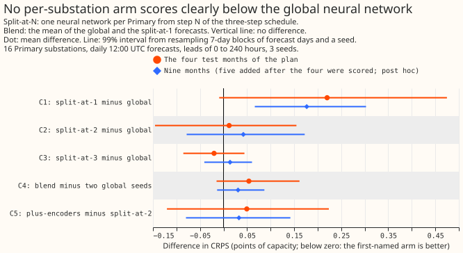
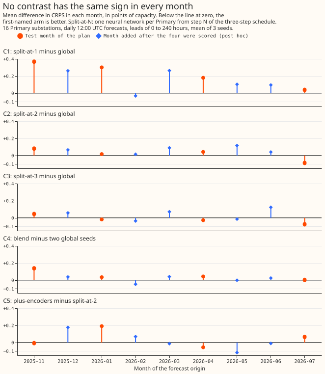
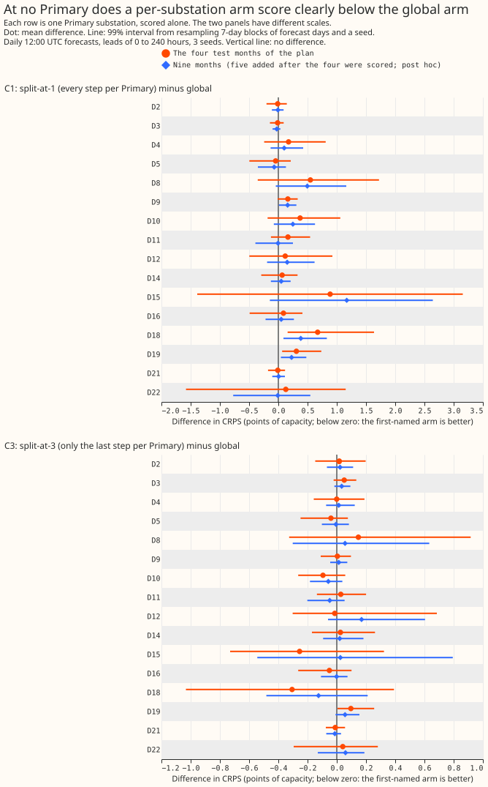

Does training the modular demand neural network on one Primary substation at a time beat the single neural network trained across all 16 Primaries?
We asked whether a demand forecast improves when each substation has its own neural network. Today one neural network learns from the demand of all 16 Primary substations at once. We trained 16 separate neural networks as a replacement, in three ways: wholly apart, apart after the first of three training steps, and apart for the last step only. We scored every version on the same daily 14-day forecasts for four months chosen in advance, and later for five more months. The score is the continuous ranked probability score (CRPS), an error measure for a forecast that gives a range of outcomes, in points of capacity (percent of a substation's capacity; smaller is better).
No version with separate neural networks beat the shared neural network. Neural networks trained wholly apart were worse on average, by about 0.2 points on a score near 4.1. Neural networks that shared the first two training steps scored level with the shared neural network, to within about 0.06 points either way. The test was too noisy to say more than that: a gain or loss smaller than about 0.06 points would not have shown.
Verdict
The verdict is inconclusive for all five planned contrasts, on the four test months and on the
nine months. The pre-registered rule needs an interval that excludes zero, the same sign in every
month, and the same result with D15 left out and with D18 left out. No contrast meets all three
conditions in either direction. The hypothesis that a per-substation neural network forecasts
better is not supported, and the plan's rule does not refute the hypothesis.
"Inconclusive" has a different meaning for each contrast.
- Split-at-1 (every step per Primary) is worse on average, and on nine months misses
refutedby one condition. On the four test months the contrast is positive in every month, and the lower bound of the interval is -0.009 with all 16 Primaries and -0.056 with D18 left out. On nine months the interval excludes zero (0.066 to 0.303) with any one Primary left out, and the contrast is negative in one month, 2026-02 (-0.03). - Split-at-3 (only the last step per Primary) is level with the global arm. The contrast is -0.020 on four months and +0.014 on nine, and both intervals span zero. The intervals reach -0.085 and +0.061, so a difference of the plan's threshold size, 0.05 points, lies inside them.
- Split-at-2, the blend, and the two extra encoders all have positive means and intervals that span zero.
Three sources of evidence would narrow the answer. The three unscored months of the backtest year, 2026-08 to 2026-10, lie in the final-test window and need the maintainer's approval. More seeds, or a second build of each arm, would narrow the intervals. The contrasts at D15 and D18 would be easier to read once the level step at each Primary is logged or masked.
Scores
The global arm has the lowest or second-lowest CRPS in both sets of months, and every neural
network beats the manual heuristic and climatology. Each score is for the mean forecast of an
arm's three seeds. nMAE is the mean absolute error of the median forecast, in points of capacity.
The four months hold 926,549 scored rows and the nine months 2,075,166. A row is one Primary, one
12:00 UTC forecast, and one half-hour at a lead under 240 hours.
| System | CRPS, four months | nMAE, four months | CRPS, nine months (post hoc) | nMAE, nine months (post hoc) |
|---|---|---|---|---|
| global (stored, experiment 677) | 4.065 | 7.04 | 4.035 | 7.11 |
| split-at-3 | 4.048 | 7.01 | 4.049 | 7.13 |
| split-at-2 | 4.115 | 7.14 | 4.087 | 7.20 |
| split-at-2-plus-encoders | 4.176 | 7.25 | 4.146 | 7.31 |
| split-at-1 | 4.347 | 7.59 | 4.254 | 7.54 |
| blend of global and split-at-1 | 4.132 | 7.19 | 4.075 | 7.21 |
| global, six seeds | 4.073 | 7.07 | 4.039 | 7.12 |
| manual heuristic | 4.943 | 8.51 | 4.864 | 8.49 |
| climatology | 5.864 | 10.47 | 5.797 | 10.45 |
Every neural network's outer quantiles are too narrow, most of all at the lower tail. On the four test months 3.6% to 4.6% of the rows fall at or below q01, against 1% nominal, and 9.9% to 12.1% at or below q05, against 5%. At the upper tail 3.2% to 3.8% of the rows fall above q99, against 1%. On nine months the share at or below q01 is 2.4% to 3.2%. The per-substation arms cover the lower tail worse than the global arm, and the arms differ by less than 0.7 points of coverage at q99. In the table, coverage is the percentage of rows at or below the quantile, and the pinball loss is in points of capacity, both on the four test months.
| System | q01 coverage | q05 coverage | q95 coverage | q99 coverage | q01 pinball | q05 pinball | q95 pinball | q99 pinball |
|---|---|---|---|---|---|---|---|---|
| global (stored, experiment 677) | 3.70 | 9.93 | 91.46 | 96.72 | 0.320 | 0.979 | 1.183 | 0.425 |
| split-at-3 | 4.42 | 11.36 | 90.93 | 96.62 | 0.332 | 0.995 | 1.139 | 0.405 |
| split-at-2 | 4.58 | 12.06 | 91.50 | 96.84 | 0.337 | 1.011 | 1.162 | 0.424 |
| split-at-2-plus-encoders | 4.62 | 11.99 | 91.22 | 96.69 | 0.349 | 1.033 | 1.187 | 0.454 |
| split-at-1 | 3.98 | 10.86 | 90.15 | 96.15 | 0.319 | 1.018 | 1.244 | 0.485 |
| blend of global and split-at-1 | 3.61 | 10.03 | 91.19 | 96.64 | 0.310 | 0.981 | 1.193 | 0.446 |
| global, six seeds | 3.61 | 9.87 | 91.57 | 96.84 | 0.320 | 0.977 | 1.175 | 0.420 |
| manual heuristic | 6.08 | 8.36 | 86.28 | 89.70 | 0.395 | 1.060 | 1.489 | 0.765 |
| climatology | 1.66 | 5.76 | 91.69 | 96.46 | 0.305 | 1.235 | 1.629 | 0.686 |
The planned contrasts pair single seeds, so a contrast is not the difference of two rows of the table above. Each cell below is the mean difference with its 99% interval. The interval comes from 20,000 resamples of 7-day blocks of forecast days and one seed.
| Contrast, four test months | Mean [99% interval] | Months above zero | Interval without D15 | Interval without D18 | Mean without 2026-01 | Verdict |
|---|---|---|---|---|---|---|
| C1 split-at-1 minus global | +0.220 [-0.009, +0.475] | 4 of 4 | [+0.041, +0.380] | [-0.056, +0.448] | +0.193 | inconclusive |
| C2 split-at-2 minus global | +0.012 [-0.146, +0.155] | 3 of 4 | [-0.024, +0.178] | [-0.113, +0.169] | +0.010 | inconclusive |
| C3 split-at-3 minus global | -0.020 [-0.085, +0.044] | 1 of 4 | [-0.083, +0.055] | [-0.060, +0.067] | -0.021 | inconclusive |
| C4 blend minus two global seeds | +0.054 [-0.015, +0.161] | 4 of 4 | [-0.005, +0.139] | [-0.032, +0.143] | +0.061 | inconclusive |
| C5 plus-encoders minus split-at-2 | +0.049 [-0.120, +0.224] | 2 of 4 | [-0.129, +0.196] | [-0.131, +0.188] | +0.001 | inconclusive |
The nine-month table is post hoc: the five extra months were fitted and scored after the four-month result was seen. The plan's rule is applied unchanged, with "each month" read as each of the nine.
| Contrast, nine months (post hoc) | Mean [99% interval] | Months above zero | Interval without D15 | Interval without D18 | Mean without 2026-01 | Verdict |
|---|---|---|---|---|---|---|
| C1 split-at-1 minus global | +0.177 [+0.066, +0.303] | 8 of 9 | [+0.039, +0.223] | [+0.046, +0.300] | +0.161 | inconclusive |
| C2 split-at-2 minus global | +0.042 [-0.078, +0.172] | 8 of 9 | [+0.010, +0.159] | [-0.063, +0.185] | +0.045 | inconclusive |
| C3 split-at-3 minus global | +0.014 [-0.041, +0.061] | 4 of 9 | [-0.026, +0.055] | [-0.027, +0.074] | +0.018 | inconclusive |
| C4 blend minus two global seeds | +0.031 [-0.014, +0.087] | 7 of 9 | [-0.015, +0.076] | [-0.013, +0.082] | +0.030 | inconclusive |
| C5 plus-encoders minus split-at-2 | +0.033 [-0.080, +0.142] | 4 of 9 | [-0.044, +0.155] | [-0.092, +0.129] | +0.013 | inconclusive |

Three of the four predictions failed. P1 held: split-at-1 is worse by 0.22 points, inside the predicted 0.05 to 0.30, and its largest losses on the four months are at D15 (+0.89), D18 (+0.67), and D8 (+0.55). P2 failed on the width of the intervals, not on their direction: neither interval of C2 or C3 lies inside plus or minus 0.05, and both intervals span zero. P3 failed with the opposite sign: the blend is worse than the mean of two global seeds. P4 failed, because the interval of C5 is wider than plus or minus 0.03.

The sign of each contrast changes from month to month, except for C1 and C4 on the four test months. Among the four test months, C1 is largest in 2025-11 (+0.37), the fold with the least history at D15 and D18, and smallest in 2026-07 (+0.04). C3 is positive in 2025-11, 2025-12, 2026-03, and 2026-06, and negative in the other five months.
Per-Primary pattern
At no Primary does the interval of any contrast lie below zero, in either set of months. For C1 the interval lies above zero at D18 and D19 on the four months, and at D9, D18, and D19 on the nine. For C3 the interval lies above zero at D19 on the four months only (0.00 to 0.26). Each per-Primary interval is a 99% interval, with no correction for reading 16 intervals.

- Split-at-1 gains at 4 Primaries and loses at 12 on the four months. The four with a negative mean are D2, D3, D5, and D21, each by 0.05 points or less. The largest losses are at D15 (+0.89), D18 (+0.67), D8 (+0.55), D10 (+0.37), and D19 (+0.31).
- Split-at-2 scores below the global arm at 4 of the 16 Primaries on the four months, and split-at-3 at 8. On nine months the counts are 3 and 6. The blend scores below the mean of two global seeds (C4) at 5 Primaries on the four months and 7 on nine, and the extra encoders score below split-at-2 (C5) at 5 and 7.
- Split-at-2 and split-at-3 have their largest gains at D15 and D18 on the four months, and both intervals span zero. Split-at-2 is -0.88 at D15 (-3.66 to +0.55) and -0.42 at D18. Split-at-3 is -0.25 at D15 and -0.31 at D18. On nine months split-at-3 is +0.02 at D15 and -0.13 at D18.
- The 12 Primaries with 6 years of history or more show a loss for split-at-2. Their pooled C2 is +0.105 (0.027 to 0.227) on four months and +0.100 (0.038 to 0.190) on nine. Their C3 is +0.021 and +0.025, with intervals that span zero.
- Split-at-1 by metering group, four months: +0.134 (0.029 to 0.248) at the 6 Primaries metered in signed MW, +0.156 (-0.098 to 0.430) at the 8 metered in MVA only, and +0.777 (-0.323 to 1.955) at D15 with D18.
- By lead, C1 is about constant and C3 drifts upwards. On the four months C1 is +0.26 at days 0 to 1 and +0.20 at days 7 to 10. C3 is -0.05 at days 0 to 1 and 0.00 at days 7 to 10.
Pre-training on D15's rows alone stops early. In split-at-1, step 1 at D15 has 53,485 to 106,168 training rows, about one ninth to one fifth of the 490,706 to 543,980 rows at D2. D15's step 1 stops after a median of 13 epochs at a validation loss of 0.9 to 1.2. D2's stops after a median of 42 epochs at a validation loss near -0.1. A short history does not explain the early stop by itself: D18's step 1, with 51,851 to 104,980 rows, runs for a median of 54 epochs. The fixed-epoch rule of the plan never applied: every phase of every Primary had enough held weeks to stop early, and no phase had fewer than three held weeks.
What the steps at D15 and D18 do
D15 and D18 each have a level step with no event in NGED's log, and the two steps carry much of the spread in every contrast. D15 steps in the week of 2026-03-09 and D18 in the week of 2026-07-06. Leaving D15 out of March lowers the stored control's pooled CRPS by 1.69 points, and leaving D18 out of July lowers the stored control's pooled CRPS by 0.68. NGED's log may miss other events, so months without a known step may hold steps that no label covers.
- March 2026 is the highest-scoring month for every arm. The global arm scores 5.13, split-at-3 5.20, split-at-2 5.22, and split-at-1 5.41, against 3.3 to 4.3 in the other months before July.
- The manual heuristic beats one arm in one month. In March the manual heuristic scores 5.27, below split-at-1 (5.41) and above the other arms. The manual heuristic reads recent demand directly, so the manual heuristic follows D15's step within days.
- The lower bound of C1 on the four months crosses zero when D15 or D22 is left out. The lower bound is -0.009 with all 16 Primaries, +0.041 without D15, and +0.065 without D22. The four test months do not include March.
- The sign of C2 on the four months flips when D22 or D8 is left out. C2 is +0.012 with all 16 Primaries, -0.031 without D22, -0.0004 without D8, and +0.066 without D15.
- July 2026 is the one month where split-at-2 and split-at-3 both score below the global arm by more than 0.07 points (-0.087 and -0.075). July holds D18's step and lies in the final-test window.
Blend and extra encoders
The equal-weight blend of the global and the split-at-1 forecasts is worse than averaging two global seeds. C4 is +0.054 on four months and +0.031 on nine, with intervals that span zero. The blend also scores above the three-seed global arm (4.132 against 4.065 on four months), a comparison the plan marks as exploratory. The audit below splits C4 into two parts on the four months. Averaging the global and the split-at-1 forecasts lowers CRPS by 0.108 points against the mean of the two members' scores, and averaging two global seeds lowers it by 0.069. That extra gain of 0.039 points is smaller than the 0.093 points by which the blend's members score worse than the pair's members, so the blend loses.
The two extra encoders of split-at-2-plus-encoders did not help. C5 is +0.049 on four months and +0.033 on nine, with intervals of about 0.11 to 0.17 points either side, so the test cannot tell a small effect from none.
The per-substation arms copy slightly more of an injected load shift. An injected shift is a simulated step added to the lag inputs only. The copied share is the fraction of the shift's depth that the median forecast reproduces, so 0 means the forecast ignores the shift and a lower share is better. On the held-out bank of injected shifts of experiment 677, the copied share over leads of 0 to 336 hours is 0.074 for the global arm, 0.092 for split-at-3, 0.093 for split-at-2, 0.082 for split-at-2-plus-encoders, and 0.101 for split-at-1 on the four months. On nine months the shares are 0.075, 0.080, 0.081, 0.077, and 0.104. The standard deviation over seeds is 0.005 to 0.016.
First run and batch diagnostic
Every number in this section is interim: one seed, the fold 2026-05, and three Primaries (D14, D2, and D15), on 44,520 rows. The first run enters no contrast.
| System, first run | CRPS, three Primaries | D14 | D2 | D15 |
|---|---|---|---|---|
| global, refitted through this experiment's code | 6.54 | 2.08 | 2.35 | 15.25 |
| split-at-3, batch 512 | 6.70 | 1.98 | 2.48 | 15.70 |
| split-at-3, batch 8,192 | 6.83 | 1.98 | 2.19 | 16.40 |
| split-at-2, batch 512 | 6.27 | 2.29 | 2.33 | 14.26 |
| split-at-2-plus-encoders, batch 512 | 6.62 | 2.17 | 2.58 | 15.19 |
| split-at-1, batch 512 | 7.57 | 2.03 | 2.18 | 18.57 |
| split-at-1, batch 8,192 | 8.79 | 2.04 | 2.17 | 22.25 |
| manual heuristic | 9.22 | 2.43 | 2.48 | 22.84 |
| climatology | 11.06 | 3.17 | 2.72 | 27.43 |
- The batch of 512 scored below the batch of 8,192 for both arms, and almost all of the difference is at D15. Split-at-1 scores 18.57 against 22.25 at D15, and within 0.01 points at D14 and D2. Split-at-3 scores 15.70 against 16.40 at D15, but at D2 the batch of 8,192 scores lower (2.19 against 2.48). No setting was changed by the diagnostic.
- The refit of the global arm reproduced the stored seed 0 to 0.00001 points of CRPS (6.5357
against 6.5357). The three stored seeds score 6.48 to 7.34 on these rows, a range of 0.87 points
that is mostly D15.
e00702_evidence.pyreruns this check and the bank check below, and writeschecks/evidence.txt.
Checks
- Median forecast minus mean forecast, per Primary: not computed. The stored forecasts hold 11 quantiles and no mean.
- Error of the median beside each CRPS contrast: the nMAE of each arm's seed-mean forecast moves in the same direction as its CRPS for all five contrasts in both sets of months (first table). The per-seed contrast of the median error was not computed.
- Match of the stored control: the rescore of experiment 677's stored forecasts on experiment 677's own scored rows agrees with its stored monthly CRPS to within 0.000001 points in each of the four test months. The check was not run for the five added months. The bank run on experiment 677's stored neural networks for 2026-05, seed 0, reproduces its bank file: the largest difference in the medians and in the injected shifts over 336,288 rows is 0.0.
- Weather inputs at origin time: for each of the nine folds, the inputs of 20 sampled test origins were rebuilt for all 16 Primaries from files issued no later than the origin's own run, in the pooled inputs and in each Primary's own inputs. The largest difference is 0.0.
- Isolation of split-at-1: all 144 Primary-folds passed. Each Primary's cleaned power, shifted lag rows, and extra input blocks hash to the same values as that Primary's rows in the pooled inputs, and the log of files that each process opened is stored.
- Rescore: a second scoring of the four test months gives the same eight tables as the first.
- Audit triggers: trigger 2 is met (P3 predicted a gain for the blend and the blend lost) and trigger 4 is met (leaving D22 or D8 out flips the sign of C2 on the four months). The audit below covers both. Triggers 1, 3, and 5 are not met. Trigger 6 is not met on the nearest comparison, which uses different rows and a different metric: experiment 677's 95% intervals of adjacent steps on the MAE of the median have half-widths of 0.027 to 0.17 points, and C3's 99% interval here, about 0.065 either side, is about 0.05 at 95%. Trigger 7 is not met: no planned experiment or other write-up depends on this result.
Audit
An independent re-derivation reproduces every planned contrast, and finds no error of method
behind either trigger. A reviewing agent that did not write the experiment wrote its own loss,
pairing, and blend code (data/ml-experiments/briefs/e702_audit.py, with its output and findings
beside it), read the stored forecasts, and scored the same 926,549 rows. The script gives C1
+0.220, C2 +0.012, C3 -0.020, C4 +0.054, and C5 +0.049 on the four test months, the same as the
first table of contrasts.
- Trigger 4, the sign of C2: the pooled mean is a near-cancellation between Primaries. Each
Primary adds its share of the rows times its own C2. D15 adds -0.050 and D18 -0.025, against
+0.041 from D22 and +0.012 from D8, so leaving D22 or D8 out turns +0.012 negative. D22's loss of
+0.66 is positive in all four months (+0.22 to +1.40) and for all three seeds (+0.49 to +0.75), so
split-at-2 is worse at D22 and the loss is not one bad fold. D8's loss comes mostly from 2025-11
(+1.01) and varies by seed (-0.05 to +0.44). Pooled C2 for single seeds ranges from -0.043 to
+0.084, so its sign lies inside the seed noise. Triage: the verdict stays
inconclusive. - Trigger 2, the blend loss: the explanation holds. The blend's extra gain from averaging two
different forecasts (0.039 points) is smaller than its members' extra error (0.093 points: half of
C1, 0.110, less 0.017 because the new global seeds 3 to 5 score 0.034 worse on average than the
stored seeds 0 to 2). Post hoc, a blend with weight 0.1 to 0.5 on split-at-1 scores 4.151 at
best, at a weight of 0.2 to 0.3, against 4.125 for the mean of two global seeds, so no weight
beats a second global seed. Triage: P3 failed because split-at-1 is too weak a member, and the
verdict stays
inconclusive. - The new global seeds 3 to 5 score 0.034 worse on average than the stored seeds 0 to 2 (-0.009, +0.064, and +0.047 for the three pairs). The pilot refit matches the stored seed 0 to 0.00001 points, so the gap is seed noise. The gap makes the global pair slightly weaker, which favours the blend in C4 and does not change its sign.
A second, independent audit agrees. An agent that had not read this page re-derived C2 and C4
with its own code (data/ml-experiments/briefs/e702_audit_fresh.md) and gave C2 +0.0122 and C4
+0.0556, with the same explanations for both triggers. Its CRPS levels are 0.015 to 0.02 points
higher than this page's, because it scored 934,016 rows without the mask that drops rows with a
missing value, and read the cleaned-power table as it stood on the day of the audit.
- Pairing single seeds makes split-at-2 look better than comparing ensembles does. C2 between the three-seed mean forecasts is +0.056, +0.014 without D22, and +0.046 without D8. C2 for the single seeds is -0.040, -0.001, and +0.078. The global arm's three seeds score 11.2 to 12.4 at D15, so split-at-2's gain at D15 ranges from -1.58 to -0.01 points across the seeds.
- C4 is positive against every global partner seed, from +0.034 to +0.113. The month 2025-11 carries most of C4 (+0.148), and C4 is about 0 in 2026-07.
- C2 changes sign across leads: -0.0005 at leads under 120 hours and +0.025 from 120 to 240 hours.
Departures from the plan
- Five folds were added after the four-month result was seen. The maintainer approved the folds
2025-12, 2026-02, 2026-03, 2026-05, and 2026-06 because the four-month contrasts were noisy.
No arm met the plan's condition for advancing (
supportedorsmall gainon the four months). Every nine-month number is post hoc. The months 2026-08 to 2026-10 are not fitted or scored. - March 2026 is among the added folds, although rule 5 of the plan made March ineligible as a test month. March enters only the nine-month set.
- The stored control is checked on experiment 677's own row set. The cleaned-power table has
since dropped D15's readings before 2025-05-07 and D18's before 2025-03-30, with the drop reason
initial_analogue_noise(checks/evidence.txt). On the current table 4,704 rows of D18 in 2025-11 and 5,244 rows of D15 and D18 in 2026-01 have no climatology, and every arm of this experiment is scored without those rows. - The training window is shorter than 730 days in six folds. The first forecast run that the folds keep has its first target at 2024-04-10 09:30 UTC (grid index 80803), because the first 9 days of runs are purged. The folds 2025-11, 2026-01, and 2026-04 therefore hold 570, 631, and 721 days of fine-tuning rows, and the added folds 2025-12, 2026-02, and 2026-03 hold 600, 662, and 690 days. The global arm has the same windows.
- The weather test for 2026-07 rebuilds the inputs from the ensemble summary file alone. Runs after 2026-06-29 have no control-member frame, so the rebuild for those origins takes its keys from the summary file of the origin's run.
- A hash check replaces the planned random-values test of isolation. The plan's test replaced the other 15 Primaries' data with random numbers. The check that ran compares hashes of each Primary's cleaned power, shifted lag rows, and extra input blocks with the pooled inputs, and guards the file readers.
- The intervals come from this experiment's own function.
block_seed_bootstrapresamples 7-day blocks that do not cross a month, and one seed. The library functions that the plan named resample the groups of amonthcolumn and pair two arms on one seed, which C4 cannot use. The decision interval is the 7-day block interval in every set of months. An interval from resampling whole calendar months is stored beside it and does not enter the verdict. - Not done: the four load-shift scenarios, the six load-shift event plots, the example day-ahead and 14-day forecast plots, the cold-night scores, and the avoidable-curtailment cost.
Limits
- Each arm was built once, with three seeds. The seeds share one build of the inputs, and the per-substation arms were not tuned beyond the batch size. The global arm's settings were tuned for pooled data, which favours the global arm.
- Blocks of forecast days overlap in valid time, so the block interval is narrower than an interval over independent weather episodes would be.
- July 2026 lies in the final-test window, and the window's other three months are unscored. Experiments 620, 667, 677, and 701 have already scored that window.
- The K1 design was tuned on development months that include 2026-01. The contrasts without January are in the tables.
- Split-at-1 minus split-at-2 bundles three differences: pooled pre-training, the Primary embedding, and the pooled input statistics. The experiment does not separate them.
- The headline leads are 0 to 240 hours. Days 11 to 14 are scored in the lead bands only.
- NGED's event log is incomplete, so the rows scored as ordinary may hold load shifts that no label covers.
Method
The neural network is K1 of experiment 667, trained as step 5 of experiment 677 trains K1. The bullets describe the global arm and then each arm's differences.
Architecture
- Inputs: K1 reads ensemble weather for the Primary's own H3 resolution-5 cell, date-time columns, 14 thermal-lag and solar-gain columns, and the Primary's own demand one day and one week before. K1 reads no other Primary's demand.
- Parts: a weather encoder, a date-time encoder, one lag encoder shared by the day lag and the week lag (83 inputs, with a 2-row, 8-wide embedding that names the lag), and a mixer with 145 inputs.
- Primary embedding: an 8-wide row per Primary, read by all four parts.
- Offset: one row of monthly knots per Primary, added to the three component means.
- Output: a mixture of three Gaussian components, read as 11 quantiles.
- Origin time: every weather input comes from the ensemble run issued 9 hours before the forecast origin or earlier, and the newest lag is at least 24 hours before the origin.
- Split-at-3: the stored global neural network after step 2, with step 3 run on one Primary's rows. The Primary's embedding row and offset row stay trainable, and the input statistics are the fold's pooled statistics.
- Split-at-2: the stored global neural network after step 1, with steps 2 and 3 run on one Primary's rows. The embedding, the offset, and the statistics are as in split-at-3.
- Split-at-1: every step on one Primary's rows. The Primary embedding is set to zero and frozen. The input standardiser, the lag statistics, the scale of the thermal-lag and solar-gain columns, and the spread fill of pre-training are fitted on the Primary's own rows.
- Split-at-2-plus-encoders: split-at-2 with a second weather encoder (21 inputs, 64 hidden units, 32 outputs) and a second date-time encoder (21 inputs, 64 hidden units, 32 outputs), with no embedding input and no pre-training. The mixer has 209 inputs.
- Blend: the mean of the global and the split-at-1 forecasts, quantile by quantile, sorted within the row.
Training regime
- Step 1 pre-trains every weight on ERA5 and CAMS estimates of past weather from 2019-09-01 (7.1 to 8.1 million rows per fold for the global arm), with AdamW, learning rate 0.0005, 20% of the rows per epoch, up to 60 epochs, and patience 8.
- Step 2 draws a fresh mixer, freezes the weather and date-time encoders, and trains on up to 730 days of ENS ensemble forecasts with uniform weights and a 3-day embargo, at learning rate 0.0002 (0.0005 for the fresh mixer).
- Step 3 fine-tunes from step 2 with a 90-day half-life, a 7-day embargo, half weight on the next 7 days, and the synthetic lag-only load shifts of experiment 581. The shifts of a Primary are the same in every arm.
- Batch: 8,192 rows for the global arm and 512 for every per-substation phase.
- Early stopping: the Primary's own held weeks (one week in 12, the global arm's weeks). The fixed epoch counts of the plan (60, 20, and 10) were never needed.
- Data: the 16 Primaries' cleaned demand with the
substation_zerohalf-hours dropped, and D15 and D18 from 2025-03-01. - Folds and seeds: one refit per month at the first day of the month, for nine months, with seeds 0, 1, and 2 for each per-substation arm (432 fits per phase and arm). The global arm's seeds 0 to 2 are experiment 677's stored forecasts, and seeds 3 to 5 are new fits of the same chain.
- Compute: the training phases took 12.8 GPU-hours on one RTX A6000 for the nine folds, of which about 5.6 are the four test months. Split-at-1 took 6.3 of the 12.8 hours.
Measurement
- Rows: daily 12:00 UTC forecasts of the 16 Primaries, scored at every half-hour where every arm, every seed, the manual heuristic, and climatology have a forecast and the cleaned observed power exists. The headline leads are the half-hours from 0 to 239.5 hours after the origin.
- Months: 2025-11, 2026-01, 2026-04, and 2026-07, chosen before any fit by a rule on stored
weather (cold winter, sunny summer, dull and windy autumn, mild spring), with a month ineligible
when leaving one Primary out lowers the stored control's CRPS by more than 1.0 point. That
eligibility rule was added after the control's scores were seen.
e00702_months.pyprints the evidence. The five added months are 2025-12, 2026-02, 2026-03, 2026-05, and 2026-06. - Metrics: CRPS as the quantile score over 11 levels, and the absolute error of the median, both in points of capacity, from experiment 668's scoring library as experiment 677 used.
- Baselines: the manual heuristic and the month-by-half-hour climatology of experiment 677, on the same rows.
- Contrasts: each seed of an arm is paired with the same seed of the global arm. C4 pairs the
blend of global seed
sand split-at-1 seedswith the mean of global seedssands + 3. - Intervals: 99% (95% with a Bonferroni correction across five contrasts), from 20,000 resamples of 7-day blocks of origin days and one seed.
- Decision rule: as in the front matter, unchanged.
Files
e00702_months.py: prints the weather, demand, and stored-control evidence for the choice of test months, and writesmonths_evidence.csv.e00702_history.py: writes each Primary's first cleaned reading tohistory_first_clean_reading.csv.e00702_core.py: the plan's constants, the fold span, the blend, the block bootstrap, and the verdict rule.e00702_world.py,e00702_model.py,e00702_train.py, ande00702_fit.py: restrict the inputs to one Primary, define the extra encoders, train a phase, and run each arm's commands for one fold, including theisolationandweatherchecks.chain_arm.sh,chain_global.sh,chain_weather.sh,gpu.sh, andRUNBOOK.md: the order of the stages for one fold.e00702_export.py: writes each arm's forecasts as contract rows.e00702_score.py: scores the arms and the contrasts, and runs the match checks.e00702_report.py: prints every table on this page from the score files and draws the three charts.e00702_evidence.py: reruns the read-only refit and bank checks of the first run, and prints the pre-training row counts of the global arm and the first kept reading of D15 and D18 in the cleaned-power table, intochecks/evidence.txt.- Code reused: the folders of experiments 87, 397, 422, 437, 448, 510, 559, 560, 572, 574,
581, 591, 613, 667, 668, and 677, imported and not edited.
gpu.shsourcesenv.shof experiment 524 to put every experiment folder onPYTHONPATH. - Read:
data/ml-experiments/00677-*/backtests/step5w_with_injected_sp1.parquet(the stored global forecasts), the stored neural networks under00677-*/chains/5/and00677-*/arms/k1_5w_sp1/,00677-*/scores/step5w_with_injected_sp1_s012/(experiment 677's scored rows),00521-*/site_map.csv(each Primary's label, identifier, capacity, and metering group), and00607-*/work/(the cached ERA5 features and observed power thate00702_months.pyreads). - Written, all under
data/ml-experiments/00702-*/:arms/(every fitted neural network, its statistics, and its phase logs),backtests/andbacktests/extra_months/(11 quantiles per Primary, origin, valid time, and seed),scores/four_months/,scores/nine_months/,scores/extra_months/, andscores/pilot/(the tables this page quotes),scores/four_months_recheck/(the second scoring of the four test months),checks/(the weather test reports),inputs/frames/(the stand-in frames of the weather test for 2026-07),fold_spans/,logs/(one log per command),checks/evidence.txt(the output ofe00702_evidence.py), andpilot_2026-05/(the first run). - Audit, under
data/ml-experiments/briefs/:e702_audit.py(the independent re-derivation),e702_audit_output.txt(its printed output),e702_audit.md(the findings and their triage), ande702_audit_fresh.md(the second, independent audit). - How to reproduce:
RUNBOOK.mdgives the commands for the first run and the four test months, the docstring ofe00702_score.pygives the scoring commands for the nine months, ande00702_report.pyprints the tables and, with--out, redraws the charts.